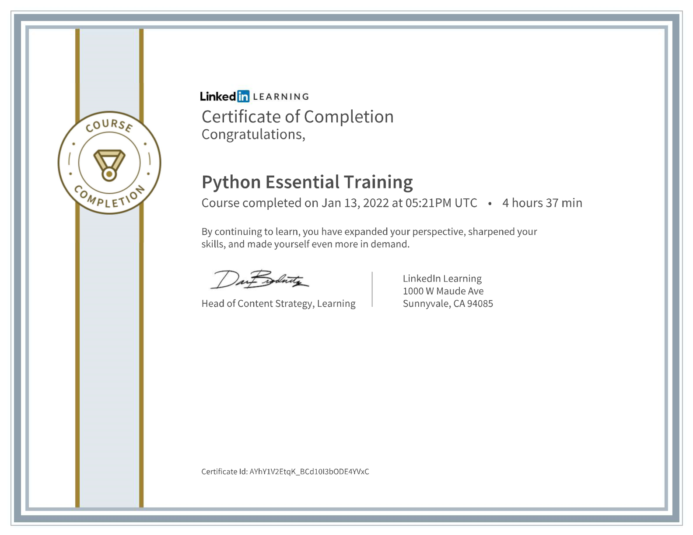
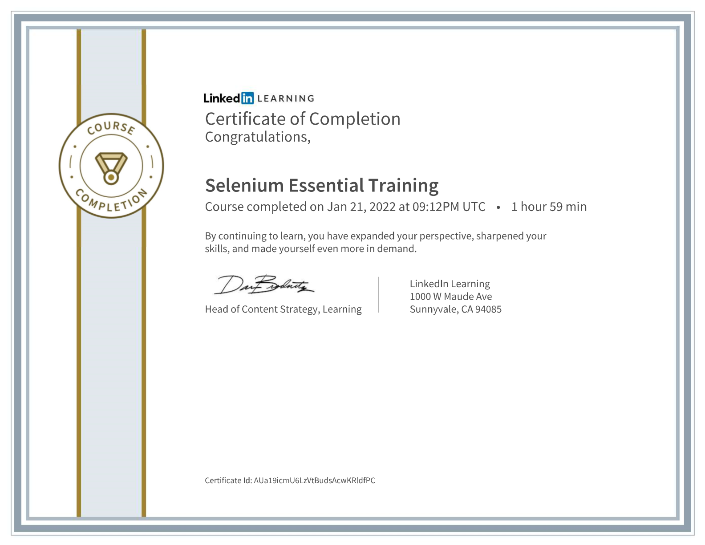
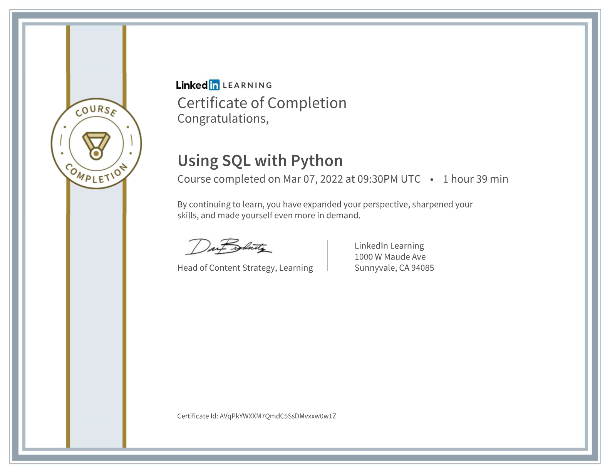

Emily Hall
Email: bibliomaniac@gmail.com
Phone: 412-251-6277
linkedin.com/in/emily-jean-hall/  github.com/ginskye
github.com/ginskye
About Me
I'm an aspiring Software Developer with an interest in Backend Development and QA. My many years in the service and administrative fields have made me an excellent communicator and collaborator. I'm a quick study in learning and navigating informational systems.
Development Experience:
PPG Industries — Software Engineering Analyst, Digital Partnerships and Innovation
June 2022 - February 2023
- Identified and coordinated external partnership opportunities across Business Units, providing value to stakeholders.
- Evaluated vendor software, developed early stage POC projects, and implemented an ADO project for the CoE.
- Awarded the PPG Copper Star by a colleague for my performance demonstrating The PPG Way
Academy Pittsburgh, 2021
Full Stack Development Bootcamp
12 Week diploma based program
- Technologies: C#, Ruby, SQL, HTML, CSS, Javascript, Rails, MVC, Android Studio, React and React Native, Selenium, Python 3, Xamarin
- Concepts included: Object Oriented Programming, Test Driven Development (ruby rspec), Databases
- Ideally suited to remote work. This course was completely remote, with collaborative group project work and instruction online via Microsoft Teams
LinkedIn Learning Certificates





Work Experience
Natural Stitches (2012-2016) - Associate, Knitting and Fiber Arts Store
I managed inventory via QuickBooks POS. I consulted with patrons in pairing complementary colors and materials selection, and offered detailed instruction and troubleshooting in knitting techniques.
Vanilla Pastry Studio - Associate and Barista, Boutique Bakery (2010-2016)
I provided exemplary customer service to patrons to ensure that their customer experience resulted in repeat business to associates.
UPMC Presbyterian, Liver Cancer Center and Starzl Transplantation Institute - Data Coordinator (2008-2010)
This fast-paced, high pressure environment required a great deal of multitasking, and the ability to critically evaluate various forms of patient data for optimal database integrity.
I was required to quickly and efficiently procure and process patient data from disparate systems, while maintaining all confidentiality procedures.
Clean Water Action, Pittsburgh Office - Telephone Canvasser
I regularly met and exceeded quotas, while fundraising for the National Clean Water Fund. I was awarded 'Best New Canvasser' in 2006 for my consistent achievements in securing repeat donations.
Education
University of Pittsburgh, 2005
- Bachelors of Arts in English Literature
- Certificate in Medieval and Renaissance Studies